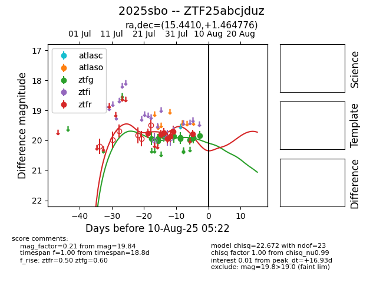

Target 2025sbo at 2025-08-10 05:22, see:
FINK: fink-portal.org/2025sbo
Lasair: lasair-ztf.lsst.ac.uk/objects/2025sbo
ALeRCE: alerce.online/object/2025sbo
TNS: wis-tns.org/object/2025sbo
YSE: ziggy.ucolick.org/yse/transient_detail/2025sbo
alt names
ZTF25abcjduz (ztf,fink)
2025sbo (tns,yse)
coordinates:
equatorial (ra, dec) = (15.4410,+1.46478)
galactic (l, b) = (128.3118,-61.29906)
photometry
last ztfg=19.84, ztfr=19.77
11 ztfg, 7 ztfr detections
